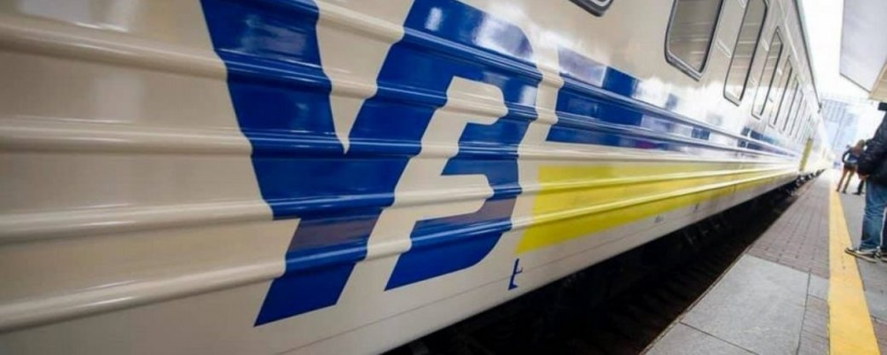
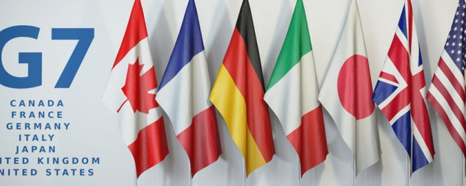
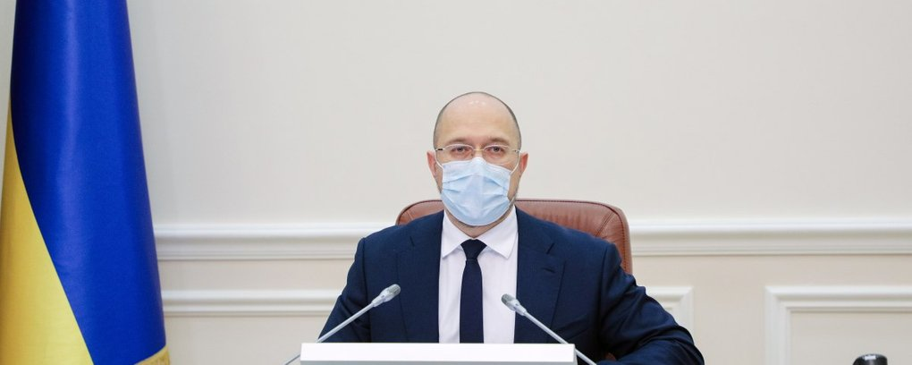
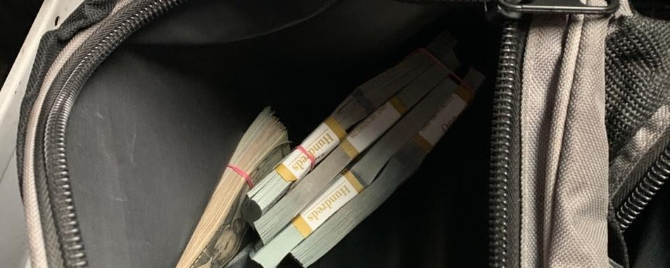

"Укрзалізниця" заявила, що поїзди курсують за розкладом, ажіотажу — нема
Попри зростання напруги навколо ситуації з можливим вторгненням Росії, залізничне сполучення працює у штатному режимі. Про це йдеться у заяві АТ "Укразалізниці".
"Усі пасажирські поїзди курсують за графіком, ажіотажного попиту на квитки не спостерігається в жодному з напрямків", — йдеться у повідомленні.
У компанії не фіксують аномальної популярності на будь-якому з напрямків. Наразі у продажу є майже 287 тис. квитків на найближчий тиждень (15-20 лютого 2022 року). Зокрема, у львівському напрямку — майже 44 тис. квитків, київському — понад 67 тис. квитків, одеському — 23,5 тис. квитків та в напрямку Лимана – 25 тис. квитків.
"Загалом на дати до кінця лютого мінімум 40% місць у поїздах залишаються вільними у всіх напрямках. Наприклад, завантаженість найпопулярніших львівського, харківського, херсонського та донецького напрямків складає 50-60 %", — повідомили у пресслужбі "УЗ".
Також у компанії закликали клієнтів зберігати спокій та подорожувати з комфортом.
Джерело: Суспільне
Міністри фінансів країн Великої сімки попереджають Росію про наслідки у випадку подальшої агресії
Міністри фінансів країн Великої сімки готові діяти швидко та рішучо для підтримки української економіки та реагування на російську агресію проти України у випадку наступу.
Про це йдеться у спільній заяві міністрів фінансів G7, опублікованій на сайті уряду Великої Британії 14 лютого.
"Наш безпосередній пріоритет в тому, аби підтримати зусилля з деескалації ситуації. Водночас ми ще раз підкреслюємо, що будь-яка подальші військова агресія Росії проти України отримає швидку, скоординовану та потужну відповідь. Ми готові колективно запровадити економічні та фінансові санкції, які матимуть масштабні та миттєві наслідки для російської економіки", — сказано в заяві.
Крім того, міністри підкреслили готовність продовжувати підтримку економіки України. Вони повідомили, що загальна сума допомоги Україні з 2014 року складає 48 мільярдів доларів. Міністри заявили, що готові розвивати цю допомогу і надалі підтримувати реформи в Україні.
Джерело: Суспільне
Гривня девальвує. Офіційний курс валют на 14 лютого
Станом на ранок 14 лютого курс гривні відносно долара США ослаб на 14 копійок, а відносно євро — на 10 копійок. Такі дані оприлюднені на сайті Національного банку України.
Таким чином, основні курси валют станом на ранок 14 лютого встановлені на такому рівні: • 28, 03 гривні за долар США; • 31,97 гривні за євро.
Натомість перед вихідними, 11 лютого, долар США коштував 27,87 гривні, а євро — 31,87 гривні.
Що відомо
Президент Володимир Зеленський заявив, що ситуація з курсом української валюти стабілізувалася і ризиків для гривні немає. Про це він заявив 2 лютого під час спільної пресконференції з прем'єр-міністром Нідерландів Марком Рютте.
Джерело: Суспільне
Уряд виділив 16,6 мільярда гривень на гарантування безпеки польотів в Україні
Кабінет міністрів виділив Міністерству інфраструктури 16,6 мільярда гривень на забезпечення безпеки польотів в умовах військових навчань Росії у Чорному морі. А профільне міністерство затвердить перелік літаків, на які будуть поширюватись державні гарантії безпеки.
Про це повідомив прем'єр-міністр Денис Шмигаль у своєму Telegram-каналі за результатами позачергового засідання уряду.
Він уточнив, що кошти виділені з Резервного фонду держбюджету. Вони призначені для гарантування безпеки польотів в Україні для страхових та лізингових компаній.
"Це рішення дозволить стабілізувати ситуацію на ринку пасажирських авіаперевезень та гарантуватиме повернення в Україну наших громадян, що зараз перебувають за кордоном", — заявив Шмигаль.
У Мінінфраструктури додали, що кошти зберігатимуться на окремому ексроу-рахунку відомства та, у разі потреби, використовуватимуться для гарантування безпеки польотів для страхових компаній, компаній-перестрахувальників, лізингових компаній та авіаперевізників. Зазначається, що виділена сума покриває страхові випадки для не менш ніж 23 повітряних суден.
"Сьогоднішнє рішення — це сигнал для міжнародної спільноти, що Україна готова брати на себе фінансові зобов’язання за безпеку літаків в українському повітряному просторі. Зокрема, вже від завтра ми починаємо гарантувати реальними грошовими коштами фінансові зобов’язання лізингових компаній", — заявив міністр інфраструктури Олександр Кубраков.
За його словами, після врегулювання та нормалізації зовнішньополітичної ситуації невикористані кошти будуть повернуті до державного бюджету.
Своєю чергою представник уряду у Верховній Раді Тарас Мельничук додав, що міністерство затвердить перелік повітряних суден, на які будуть поширюватись державні гарантії безпеки.
Джерело: Суспільне
Платіжна система WebMoney зупинила всі операції з гаманцями у російських рублях
У платіжній системі WebMoney з 11 лютого стали недоступними всі операції з гаманцями у російських рублях. Про це повідомляється на сайті WebMoney. Це сталося через те, що 11 лютого російський Центробанк відкликав ліцензію у Консервативного комерційного банку (банку “ККБ”), який був розрахунковим банком системи WebMoney для гаманців у рублях. Про це передає інтернет-видання Meduza.
У Центробанку заявили, що “ККБ” порушував законодавство у сфері протидії відмиванню коштів і фінансуванню тероризму.
За даними Meduza, банк “ККБ” фактично не проводив традиційну банківську діяльність. Він спеціалізувався на наданні послуг у сфері електронної комерції. Банк не досліджував економічного змісту операцій клієнтів, джерела грошових коштів за якими були непрозорими. Існували підвищені ризики залучення цієї фінустанови до обслуговування “тіньового” ігорного бізнесу та нелегальних учасників фінансового ринку.
WebMoney заявила, що банк “ККБ” не порушував закон, й назвала дії Центробанку ”недружнім кроком”. Компанія повідомила, що заморожені у банку “ККБ” кошти учасників платіжної системи будуть виплачені їхнім власникам. У WebMone також пообіцяли докласти “всі доступні юридичні й фінансові зусилля для якнайшвидшої компенсації вартості заблокованих інструментів”.
Платіжна система WebMoney була створена в Росії у 1998 році. В ній можна створювати гаманці у російських рублях, іншій валюті й криптовалюті. Нині у системі, за даними WebMoney, зареєстровані понад 45 мільйонів користувачів. З початку лютого вони провели понад мільйон транзакцій.
У грудні 2021 року WebMoney на пів року призупинила можливість поповнення гаманців у рублях через припис банку “ККБ” від Центробанку.
Джерело: ТСН